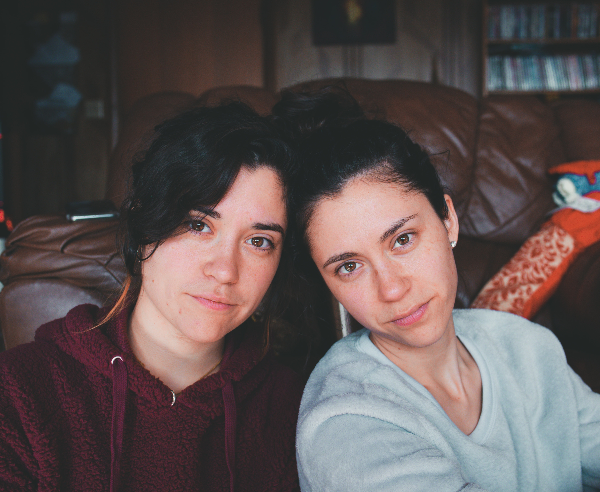

Specification
Personas and Scenarions
Based on a User Centered Design perspective, we defined the key personas and usage scenarios to define the acceptance criteria of our system. These criteria were the support for most of implemented tests, as described in the next section.Persona
Who will use our system and why

Harold
Retired elder
- Motivations:
- Harold is a 75 years old now-retired Hungarian electrical engineer. Harold is also the carrier of a disease, similar to bipolar disorder, which causes him to change his temper in an abrupt, incontrollable way.
- His family is very supportive of his condition. However, as any severe medical condition, Harold requires medical follow-up. In an ideal situation, his doctor would be warned every time his temper changed in order to track and analyze his behavior patterns. Since this isn’t possible, Harold got himself a SmartMirror.
- Harold’s account is setup so that every time he stands near, looking at his SmartMirror, the mirror takes a photograph, analyzes the image and determines Harold’s current mood. This information is then sent to his doctor. It also sends a notification every time the system detects a change in his mood.
John
Doctor
- Motivations:
- John is Harold’s doctor. He cares a lot for him and tries to keep up with his current state (mood) at all time.
- In order to be able to remotely know how’s his patient doing, he downloaded an app that notifies him whenever there’s a mood change with Harold. It also allows him to look at statistics regarding the latest readings.

- Motivations:
- Joanne and Madison are two 20 years old twin sisters.
- These twin sisters are not a copy of each other. Joanne is enrolled in an Engineering in an University in the north while her sister Madison is perfecting her dancing skills in an dance academy, down south.
- Although their different interests, they really like and care for each other and make video calls whenever they can. However, Madison is often busy practicing and having her laptop opened on the floor while she’s trying out new moves is, in the very least, risky. Since Madison needs a mirror to practice, Joanne got her a SmartMirror. This way, they can talk while she practices and Joanne can see her new moves firsthand.
Usage Scenarios
How the system will be used
| Feature | Scenario | Scenario Description | Scenario Status |
|---|---|---|---|
| Report Status In order to get better medical care Users should be able to easily report their current status |
Choose to Report | Given a user with a medical condition When the user is happy And the user steps in front of the mirror and says "Status report" Then the smart mirror should assess the user mood as happy |
Done |
| Report on Wake (RoW) | Given a user with a medical condition When the user is not happy And the user just woke up and steps in front of the mirror for a few seconds Then the smart mirror should assess the user mood as neutral |
Done | |
| Remotely Check Patient Status In order to provide better medical care Users should be able to easily check their patient's (latest) reported status |
Emotion Trends | Given a medical professional that needs to know the trends of emotions for all users And a mobile app that accesses the system's public API Then the medical professional should be able to obtain all emotions registered without any user identification |
Done |
| Latest Reports | Given a medical professional that takes care of a user And a mobile app that accesses the system's public API When the medical professional wishes to check on their latest reports Then the medical professional should be able to access the latest reports of the patient using the mobile app |
Done | |
| Display Informations In order to complement the day to day tasks Users should be able to get useful informations (like the weather) |
Checking the Weather | Given a user And internet connection When the user says "Display weather" Then the smart mirror should display the weather for the day |
Not done (out of scope) |
| Checking To Do List | Given a user And internet connection When the user says "Display To Do list" Then the smart mirror should display the user's "To do list" |
Not done (out of scope) | |
| Reminders In order to complement the day to day tasks Users should be able to set reminders |
Set Reminder | Given a user And internet connection When the user says "Set reminder for 10 o'clock" Then the smart mirror should set a reminder with an associated alarm set to go off at 10 o'clock |
Not done (out of scope) |
| Multimedia Capture In order to complement the day to day tasks Users should be able to take photos and record audio and video |
Taking a Photo | Given a user And internet connection When the user says "Take a photo" Then the smart mirror should save the current frame as an image file |
Not done (out of scope) |
| Recording Audio/Video | Given a user And internet connection When the user says "Record audio/video" Then the smart mirror should record the audio/video stream until the user says "Stop" |
Not done (out of scope) |
Implementation
Having in mind a Behavior-driven development (BDD) mindset, the defined scenarios for each feature were the basis for the testing of the system. Post-production tests based on those scenarios were implemented using the Cucumber tool.
To make the testing process more robust and also quicker during the execution of the DevOps pipeline, we opted to divide the tests implemented using the Cucumber tool into 2 sets: online and offline tests. The difference between these 2 types lies on the usage or not of the external API the system provides. This division was useful to make sure that, if needed, only part of the tests can be run when needed (and not all of them) and also to allow parallelization of the execution of the 2 sets of tests in the pipeline (see the Cucumber Tests stages here).
It was also developed an integration test that uses the API to retrieve the emotion counts (statistics), then it injects a new image in the system, simulating a photo taken by the mirror. This image is processed by the emotion detection module that adds the new emotion to the system. The last step of this test requires a new request to the same end point of the API which will allow for a comparison between the first emotion counts and the updated one. The difference between them should correspond to the emotion present in the image injected.
Tests can be run through the execution of the Jenkins pipeline of the project, where it's possible to see the reports prepared in the last stage of the pipeline as illustrated below (Cucumber reports Jenkins plugin is required).
Reports for feature 2 (Remotely Check Patient Status) as seen in the Jenkins dashboard
Alternatively, the tests can be run using
mvn test -Dcucumber.options="--tags @online/@offline --tags ~@not-implemented" -s settings.xml if you only want to run online/offline tests or mvn test -Dcucumber.options= --tags ~@not-implemented" -s settings.xml if you want to run all the tests. In these situations, the results will be available in the file target/cucumber/report.json